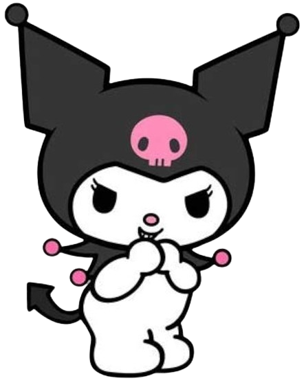

|  | Kuromi (クロミ, Kuromi ) adalah karakter dari alam semesta My Melody . Dia adalah saingan dan doppelgänger My Melody , dan bermanifestasi sebagai kelinci putih atau makhluk mirip imp yang mengenakan topi badut hitam dengan tengkorak merah muda di bagian depan dan ekor setan hitam. Ekspresi wajah tengkorak di dahinya berubah sesuai suasana hati Kuromi. Tepatnya, ulang tahunnya jatuh pada Halloween (31 Oktober). Namanya diterjemahkan dari bahasa Jepang ke bahasa Inggris sebagai "kecantikan hitam". Ibu dan ayahnya memakai pakaian yang sangat mirip dengan dirinya . Kuromi membuat penampilan pertamanya pada tahun 2005 sebagai antagonis Onegai My Melody dan dimaksudkan untuk menjadi rekan yang nakal dan gelap dari My Melody, meskipun di seri selanjutnya seperti Hello Kitty dan Friends Supercute Adventures , perannya sekarang diubah menjadi lebih banyak. sikap ramah dengan Hello Kitty dan teman-temannya, termasuk My Melody sendiri. |
| Informasi Lebih Lengkap Bisa Kamu Baca Disini!૮₍˶ᵔ ᵕ ᵔ˶₎ა |